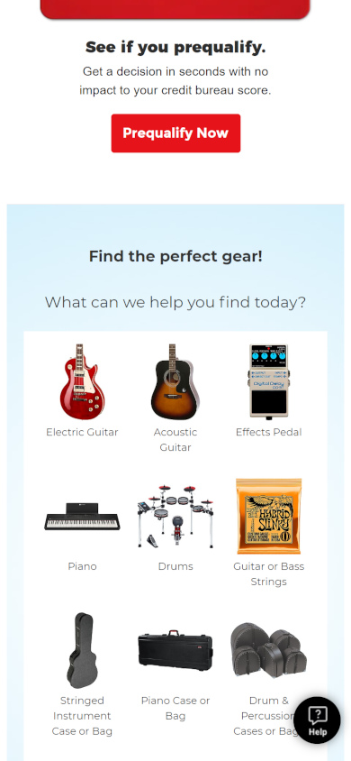
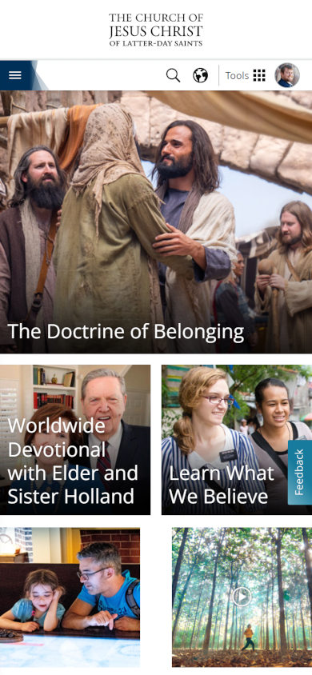

White Space and Clean Design
Hirschi Companies
hirschicompanies.comThis site is a great example of using white space and clean design. The site is not pressed together and crammed onto the page. Everything is spaced apart well and makes a very clean look.
Alignment
Guitar Center
guitarcenter.com This site uses alignment all over the place. It's no surprise considering it is a shopping site, but the products on the pages are all lined up neatly and it is easy to find your way around.
Visual Hierarchy
Church of Jesus Christ of Latter-day Saints
churchofjesuschrist.org Of course I had to use the church's website, but it uses visual hierarchy very well. The current main topic is the largest part of the page. Then the other messages appear underneath it, leading the visual movement naturally down the page.